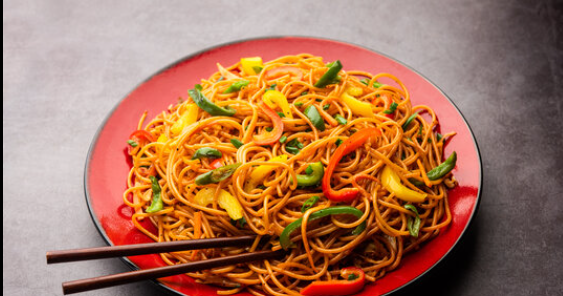

Chow Mein
⭐⭐⭐⭐⭐
4.8 (320 reviews)

Ingredients
Water as required
Spaghetti 300g
1/2 teaspoon salt or to taste
Cooking oil 1-2 tbs
Soy sauce 1 tbs
Vinegar 1/2 tbs
White pepper powder 1 tsp
Garlic powder 1 tsp
Chicken boneless stripes 300g
Baking soda 1/4 tsp
Cooking oil 2 tbs
Soy sauce 2 tbs
Chilli sauce 3 tbs
Chilli garlic sauce 1 tbs
Oyster sauce 2 tbs
Sesame oil (Til ka tel) 1 tbs
Sugar 1 tbs
Black pepper powder 1 tsp
Cooking oil 1-2 tbs
Carrots julienne 1 cup
Capsicum julienne 1 cup
Cabbage shredded 1 & 1/2 cups
Cooking oil 2-3 tbs
Garlic sliced 8-10 cloves
Spaghetti boiled
Fried Chicken
Prepared chowmein sauce
Stir fried vegetables
Spring onion (Hara pyaz) leaves 1-2 tbs
Directions
In boiling water add spaghettis & mix well.
Add salt, mix well & boil until tender (4-5 minutes).
On a pot place a strainer, strain it & rinse with tap water. Add oil, mix well,strain & set.
In a bowl add soy sauce, vinegar, white pepper powder, salt, garlic powder & mix well.
Add chicken boneless stripes & mix well.
Add baking soda & mix well. Cover & let it rest for 15 minutes.
In a wok add cooking oil, marinated chicken, cook for 4-5 minutes on medium flame or until done & set aside.
In a bowl add soy sauce, chilli sauce, chilli garlic sauce, oyster sauce, sesame oil, sugar, salt, black pepper powder, mix well. Chowmein sauce is ready & set aside.
In the same wok add cooking oil, carrots, capsicum, cabbage, mix well & saute for 2 minutes. Take out & set aside.
In same wok add cooking oil, garlic & mix well.
Add spring onion white, mix well & saute for a minute.
Add boiled spaghettis & mix well for a minute.
Add cooked chicken & mix well.
Add prepared chowmein sauce, mix well & cook for 1 minute on high flame.
Add stir fried vegetables & mix well.
Add spring onion leaves, mix well & serve.
Nutrition Facts
Calories: 400 | Protein: 35g | Carbs: 10g | Fat: 20g